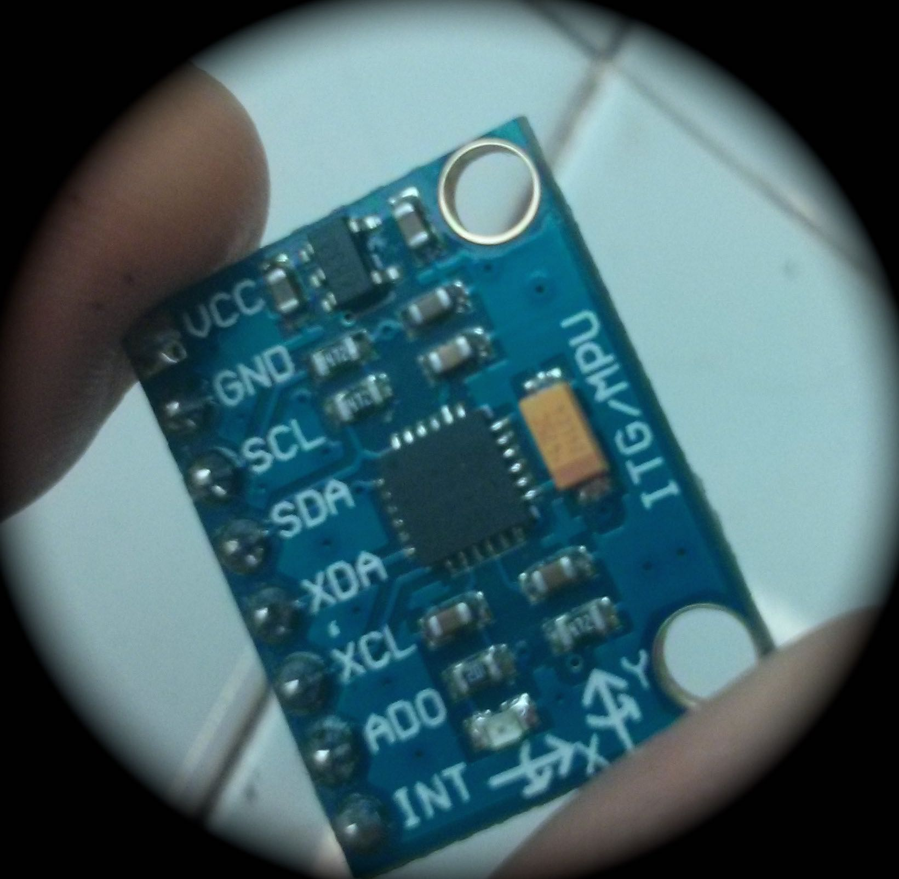

Practicas con Arduino
Acelerómetro y giroscopio (MPU 6065).

Realizar una montaje que utilice el acelerómetro/giroscopio MPU 6050 de tal manera que cuando lo giremos horizontalmente el eje de un servomotor siga el movimiento del sensor.
Para ello conectaremos el servo al pin 10 y realizaremos las conexiones con Arduino del sensor MPU 6050 indicadas en la tabla indicada en la sección de Montaje.
También es necesario instalar la librería para MPU 6050 (desarrollo de Jeff Rowberg) disponible en internet. Un enlace para su descarga lo encontramos en http://diyhacking.com/projects/MPU6050.zip
Otra librería necesaria es I2Cdev: http://diyhacking.com/projects/I2Cdev.zip
Vamos a ver el resultado de la demostración en el siguiente vídeo:
ESQUEMA:
| ARDUINO | MPU 6050 |
| 5V | VCC |
| GND | GND |
| A4 | SDA |
| A5 | SCL |
| D2 | INT |
| ARDUINO | SERVO |
| 5V | +Vcc |
| GND | GND |
| D10 | SEÑAL |
PROGRAMA A CARGAR EN ARDUINO:
// I2C device class (I2Cdev) demonstration Arduino sketch for MPU6050 class using DMP (MotionApps v2.0) // 6/21/2012 by Jeff Rowberg <jeff@rowberg.net> // Updates should (hopefully) always be available at https://github.com/jrowberg/i2cdevlib // // Changelog: // 2013-05-08 - added seamless Fastwire support // - added note about gyro calibration // 2012-06-21 - added note about Arduino 1.0.1 + Leonardo compatibility error // 2012-06-20 - improved FIFO overflow handling and simplified read process // 2012-06-19 - completely rearranged DMP initialization code and simplification // 2012-06-13 - pull gyro and accel data from FIFO packet instead of reading directly // 2012-06-09 - fix broken FIFO read sequence and change interrupt detection to RISING // 2012-06-05 - add gravity-compensated initial reference frame acceleration output // - add 3D math helper file to DMP6 example sketch // - add Euler output and Yaw/Pitch/Roll output formats // 2012-06-04 - remove accel offset clearing for better results (thanks Sungon Lee) // 2012-06-01 - fixed gyro sensitivity to be 2000 deg/sec instead of 250 // 2012-05-30 - basic DMP initialization working /* ============================================ I2Cdev device library code is placed under the MIT license Copyright (c) 2012 Jeff Rowberg Permission is hereby granted, free of charge, to any person obtaining a copy of this software and associated documentation files (the "Software"), to deal in the Software without restriction, including without limitation the rights to use, copy, modify, merge, publish, distribute, sublicense, and/or sell copies of the Software, and to permit persons to whom the Software is furnished to do so, subject to the following conditions: The above copyright notice and this permission notice shall be included in all copies or substantial portions of the Software. THE SOFTWARE IS PROVIDED "AS IS", WITHOUT WARRANTY OF ANY KIND, EXPRESS OR IMPLIED, INCLUDING BUT NOT LIMITED TO THE WARRANTIES OF MERCHANTABILITY, FITNESS FOR A PARTICULAR PURPOSE AND NONINFRINGEMENT. IN NO EVENT SHALL THE AUTHORS OR COPYRIGHT HOLDERS BE LIABLE FOR ANY CLAIM, DAMAGES OR OTHER LIABILITY, WHETHER IN AN ACTION OF CONTRACT, TORT OR OTHERWISE, ARISING FROM, OUT OF OR IN CONNECTION WITH THE SOFTWARE OR THE USE OR OTHER DEALINGS IN THE SOFTWARE. =============================================== */ // I2Cdev and MPU6050 must be installed as libraries, or else the .cpp/.h files // for both classes must be in the include path of your project #include "I2Cdev.h" #include "MPU6050_6Axis_MotionApps20.h" //#include "MPU6050.h" // not necessary if using MotionApps include file // Arduino Wire library is required if I2Cdev I2CDEV_ARDUINO_WIRE implementation // is used in I2Cdev.h #if I2CDEV_IMPLEMENTATION == I2CDEV_ARDUINO_WIRE #include "Wire.h" #endif // class default I2C address is 0x68 // specific I2C addresses may be passed as a parameter here // AD0 low = 0x68 (default for SparkFun breakout and InvenSense evaluation board) // AD0 high = 0x69 MPU6050 mpu; //MPU6050 mpu(0x69); // <-- use for AD0 high /* ========================================================================= NOTE: In addition to connection 3.3v, GND, SDA, and SCL, this sketch depends on the MPU-6050's INT pin being connected to the Arduino's external interrupt #0 pin. On the Arduino Uno and Mega 2560, this is digital I/O pin 2. * ========================================================================= */ /* ========================================================================= NOTE: Arduino v1.0.1 with the Leonardo board generates a compile error when using Serial.write(buf, len). The Teapot output uses this method. The solution requires a modification to the Arduino USBAPI.h file, which is fortunately simple, but annoying. This will be fixed in the next IDE release. For more info, see these links: http://arduino.cc/forum/index.php/topic,109987.0.html http://code.google.com/p/arduino/issues/detail?id=958 * ========================================================================= */ // uncomment "OUTPUT_READABLE_QUATERNION" if you want to see the actual // quaternion components in a [w, x, y, z] format (not best for parsing // on a remote host such as Processing or something though) //#define OUTPUT_READABLE_QUATERNION // uncomment "OUTPUT_READABLE_EULER" if you want to see Euler angles // (in degrees) calculated from the quaternions coming from the FIFO. // Note that Euler angles suffer from gimbal lock (for more info, see // http://en.wikipedia.org/wiki/Gimbal_lock) //#define OUTPUT_READABLE_EULER // uncomment "OUTPUT_READABLE_YAWPITCHROLL" if you want to see the yaw/ // pitch/roll angles (in degrees) calculated from the quaternions coming // from the FIFO. Note this also requires gravity vector calculations. // Also note that yaw/pitch/roll angles suffer from gimbal lock (for // more info, see: http://en.wikipedia.org/wiki/Gimbal_lock) #define OUTPUT_READABLE_YAWPITCHROLL // uncomment "OUTPUT_READABLE_REALACCEL" if you want to see acceleration // components with gravity removed. This acceleration reference frame is // not compensated for orientation, so +X is always +X according to the // sensor, just without the effects of gravity. If you want acceleration // compensated for orientation, us OUTPUT_READABLE_WORLDACCEL instead. //#define OUTPUT_READABLE_REALACCEL // uncomment "OUTPUT_READABLE_WORLDACCEL" if you want to see acceleration // components with gravity removed and adjusted for the world frame of // reference (yaw is relative to initial orientation, since no magnetometer // is present in this case). Could be quite handy in some cases. //#define OUTPUT_READABLE_WORLDACCEL // uncomment "OUTPUT_TEAPOT" if you want output that matches the // format used for the InvenSense teapot demo //#define OUTPUT_TEAPOT #define LED_PIN 13 // (Arduino is 13, Teensy is 11, Teensy++ is 6) bool blinkState = false; // MPU control/status vars bool dmpReady = false; // set true if DMP init was successful uint8_t mpuIntStatus; // holds actual interrupt status byte from MPU uint8_t devStatus; // return status after each device operation (0 = success, !0 = error) uint16_t packetSize; // expected DMP packet size (default is 42 bytes) uint16_t fifoCount; // count of all bytes currently in FIFO uint8_t fifoBuffer[64]; // FIFO storage buffer // orientation/motion vars Quaternion q; // [w, x, y, z] quaternion container VectorInt16 aa; // [x, y, z] accel sensor measurements VectorInt16 aaReal; // [x, y, z] gravity-free accel sensor measurements VectorInt16 aaWorld; // [x, y, z] world-frame accel sensor measurements VectorFloat gravity; // [x, y, z] gravity vector float euler[3]; // [psi, theta, phi] Euler angle container float ypr[3]; // [yaw, pitch, roll] yaw/pitch/roll container and gravity vector // packet structure for InvenSense teapot demo uint8_t teapotPacket[14] = { '$', 0x02, 0,0, 0,0, 0,0, 0,0, 0x00, 0x00, '\r', '\n' }; // ================================================================ // === INTERRUPT DETECTION ROUTINE === // ================================================================ volatile bool mpuInterrupt = false; // indicates whether MPU interrupt pin has gone high void dmpDataReady() { mpuInterrupt = true; } #include "Servo.h" Servo servo1; // ================================================================ // === INITIAL SETUP === // ================================================================ void setup() { // join I2C bus (I2Cdev library doesn't do this automatically) #if I2CDEV_IMPLEMENTATION == I2CDEV_ARDUINO_WIRE Wire.begin(); TWBR = 24; // 400kHz I2C clock (200kHz if CPU is 8MHz) #elif I2CDEV_IMPLEMENTATION == I2CDEV_BUILTIN_FASTWIRE Fastwire::setup(400, true); #endif // initialize serial communication // (115200 chosen because it is required for Teapot Demo output, but it's // really up to you depending on your project) Serial.begin(115200); while (!Serial); // wait for Leonardo enumeration, others continue immediately // NOTE: 8MHz or slower host processors, like the Teensy @ 3.3v or Ardunio // Pro Mini running at 3.3v, cannot handle this baud rate reliably due to // the baud timing being too misaligned with processor ticks. You must use // 38400 or slower in these cases, or use some kind of external separate // crystal solution for the UART timer. // initialize device Serial.println(F("Initializing I2C devices...")); mpu.initialize(); // verify connection Serial.println(F("Testing device connections...")); Serial.println(mpu.testConnection() ? F("MPU6050 connection successful") : F("MPU6050 connection failed")); // wait for ready Serial.println(F("\nSend any character to begin DMP programming and demo: ")); while (Serial.available() && Serial.read()); // empty buffer while (!Serial.available()); // wait for data while (Serial.available() && Serial.read()); // empty buffer again // load and configure the DMP Serial.println(F("Initializing DMP...")); devStatus = mpu.dmpInitialize(); // supply your own gyro offsets here, scaled for min sensitivity mpu.setXGyroOffset(220); mpu.setYGyroOffset(76); mpu.setZGyroOffset(-85); mpu.setZAccelOffset(1788); // 1688 factory default for my test chip // make sure it worked (returns 0 if so) if (devStatus == 0) { // turn on the DMP, now that it's ready Serial.println(F("Enabling DMP...")); mpu.setDMPEnabled(true); // enable Arduino interrupt detection Serial.println(F("Enabling interrupt detection (Arduino external interrupt 0)...")); attachInterrupt(0, dmpDataReady, RISING); mpuIntStatus = mpu.getIntStatus(); // set our DMP Ready flag so the main loop() function knows it's okay to use it Serial.println(F("DMP ready! Waiting for first interrupt...")); dmpReady = true; // get expected DMP packet size for later comparison packetSize = mpu.dmpGetFIFOPacketSize(); } else { // ERROR! // 1 = initial memory load failed // 2 = DMP configuration updates failed // (if it's going to break, usually the code will be 1) Serial.print(F("DMP Initialization failed (code ")); Serial.print(devStatus); Serial.println(F(")")); } // configure LED for output pinMode(LED_PIN, OUTPUT); servo1.attach(10); } // ================================================================ // === MAIN PROGRAM LOOP === // ================================================================ void loop() { // if programming failed, don't try to do anything if (!dmpReady) return; // wait for MPU interrupt or extra packet(s) available while (!mpuInterrupt && fifoCount < packetSize) { // other program behavior stuff here // . // . // . // if you are really paranoid you can frequently test in between other // stuff to see if mpuInterrupt is true, and if so, "break;" from the // while() loop to immediately process the MPU data // . // . // . } // reset interrupt flag and get INT_STATUS byte mpuInterrupt = false; mpuIntStatus = mpu.getIntStatus(); // get current FIFO count fifoCount = mpu.getFIFOCount(); // check for overflow (this should never happen unless our code is too inefficient) if ((mpuIntStatus & 0x10) || fifoCount == 1024) { // reset so we can continue cleanly mpu.resetFIFO(); Serial.println(F("FIFO overflow!")); // otherwise, check for DMP data ready interrupt (this should happen frequently) } else if (mpuIntStatus & 0x02) { // wait for correct available data length, should be a VERY short wait while (fifoCount < packetSize) fifoCount = mpu.getFIFOCount(); // read a packet from FIFO mpu.getFIFOBytes(fifoBuffer, packetSize); // track FIFO count here in case there is > 1 packet available // (this lets us immediately read more without waiting for an interrupt) fifoCount -= packetSize; #ifdef OUTPUT_READABLE_QUATERNION // display quaternion values in easy matrix form: w x y z mpu.dmpGetQuaternion(&q, fifoBuffer); Serial.print("quat\t"); Serial.print(q.w); Serial.print("\t"); Serial.print(q.x); Serial.print("\t"); Serial.print(q.y); Serial.print("\t"); Serial.println(q.z); #endif #ifdef OUTPUT_READABLE_EULER // display Euler angles in degrees mpu.dmpGetQuaternion(&q, fifoBuffer); mpu.dmpGetEuler(euler, &q); Serial.print("euler\t"); Serial.print(euler[0] * 180/M_PI); Serial.print("\t"); Serial.print(euler[1] * 180/M_PI); Serial.print("\t"); Serial.println(euler[2] * 180/M_PI); #endif #ifdef OUTPUT_READABLE_YAWPITCHROLL // display Euler angles in degrees mpu.dmpGetQuaternion(&q, fifoBuffer); mpu.dmpGetGravity(&gravity, &q); mpu.dmpGetYawPitchRoll(ypr, &q, &gravity); Serial.print("ypr\t"); Serial.print(ypr[0] * 180/M_PI); Serial.print("\t"); Serial.print(ypr[1] * 180/M_PI); Serial.print("\t"); Serial.println(ypr[2] * 180/M_PI); #endif #ifdef OUTPUT_READABLE_REALACCEL // display real acceleration, adjusted to remove gravity mpu.dmpGetQuaternion(&q, fifoBuffer); mpu.dmpGetAccel(&aa, fifoBuffer); mpu.dmpGetGravity(&gravity, &q); mpu.dmpGetLinearAccel(&aaReal, &aa, &gravity); Serial.print("areal\t"); Serial.print(aaReal.x); Serial.print("\t"); Serial.print(aaReal.y); Serial.print("\t"); Serial.println(aaReal.z); #endif #ifdef OUTPUT_READABLE_WORLDACCEL // display initial world-frame acceleration, adjusted to remove gravity // and rotated based on known orientation from quaternion mpu.dmpGetQuaternion(&q, fifoBuffer); mpu.dmpGetAccel(&aa, fifoBuffer); mpu.dmpGetGravity(&gravity, &q); mpu.dmpGetLinearAccel(&aaReal, &aa, &gravity); mpu.dmpGetLinearAccelInWorld(&aaWorld, &aaReal, &q); Serial.print("aworld\t"); Serial.print(aaWorld.x); Serial.print("\t"); Serial.print(aaWorld.y); Serial.print("\t"); Serial.println(aaWorld.z); #endif #ifdef OUTPUT_TEAPOT // display quaternion values in InvenSense Teapot demo format: teapotPacket[2] = fifoBuffer[0]; teapotPacket[3] = fifoBuffer[1]; teapotPacket[4] = fifoBuffer[4]; teapotPacket[5] = fifoBuffer[5]; teapotPacket[6] = fifoBuffer[8]; teapotPacket[7] = fifoBuffer[9]; teapotPacket[8] = fifoBuffer[12]; teapotPacket[9] = fifoBuffer[13]; Serial.write(teapotPacket, 14); teapotPacket[11]++; // packetCount, loops at 0xFF on purpose #endif // blink LED to indicate activity blinkState = !blinkState; digitalWrite(LED_PIN, blinkState); servo_yaw(); } } void servo_yaw(){ if (ypr[0] > 0) servo1.write(ypr[0] * 180/M_PI); }